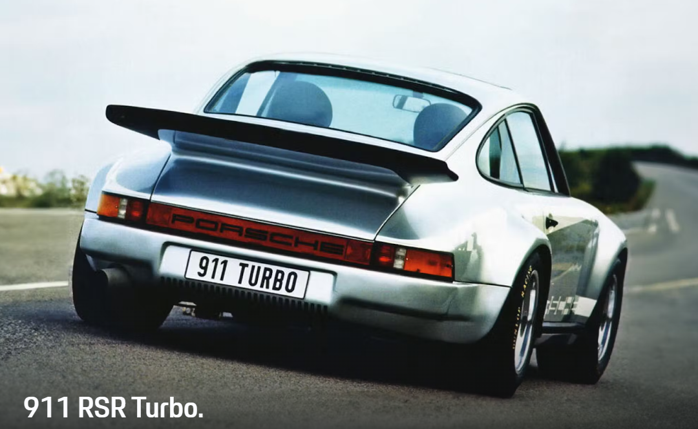
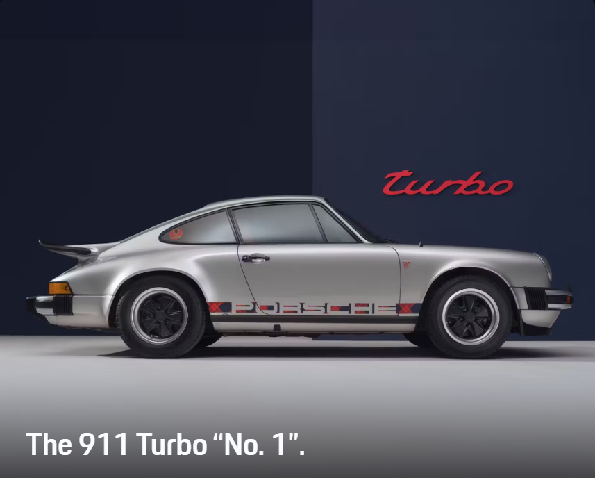
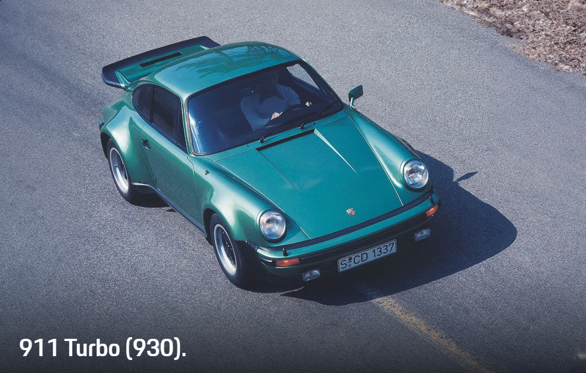
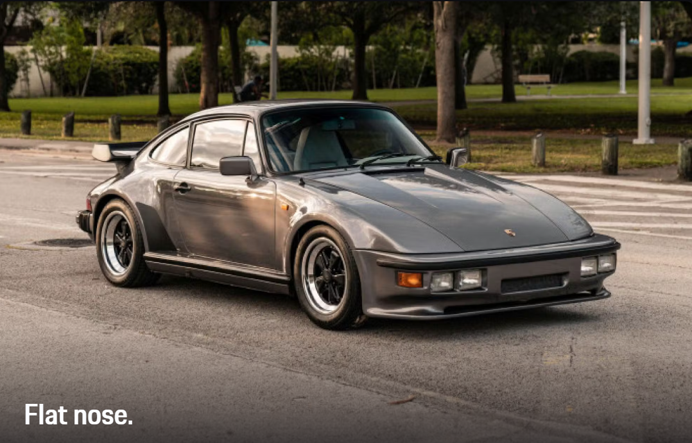

Porsche set new technical standards with the 911 RSR Turbo concept car presented at the IAA in 1973 - and
also made an impression with its uncompromising design

The very first Turbo, the legendary Porsche 911 Turbo "No. 1". Back then, it still had the narrow body of
the 911 Carrera and a 2.7-liter engine.

The premiere of the 911 Turbo with a 3.0-liter engine a few weeks later at the 1974 Paris Motor Show caused
an even bigger sensation. the independent type number 930 became synonymous with the fastest road sports car
of its time.

A rare gem: the improved 330 PS version of the 911 Turbo from 1982 from the Sonderwunsch (special request)
department with a "flat nose" body - also known as the Slantnose or 930 S. The aerodynamic design was based
on the Porsche 935 racing car.